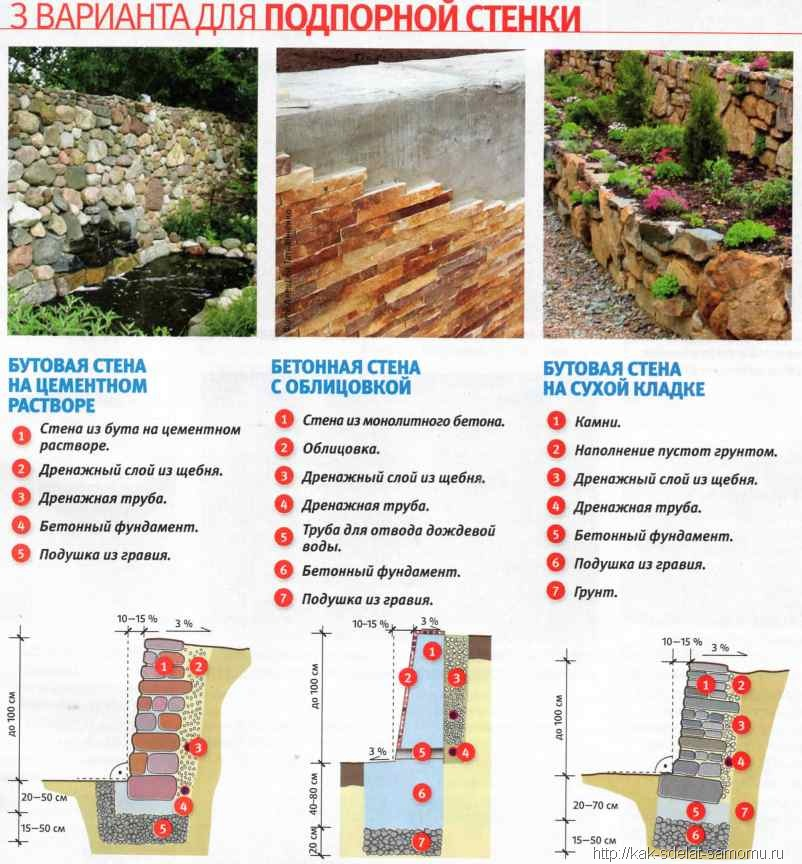

|
Подпорная стенка, как можно догадаться по названию, являет собой каменную стену, построенную впритык к естественному склону или грунтовой насыпи. Сначала подпорные стенки строились из чисто практических соображений. Во-первых, чтобы предупредить сдвиг почвы и камней на склонах. Во-вторых, для создания на горном рельефе “каскадных” площадок, удобных для посадки сельскохозяйственных культур и строительства жилья. Но оказалось, что подпорные стенки красивы и сами по себе, даже, если не выполняют ни одну из перечисленных функций. Особенно, если в щелях между камнями высажены декоративные растения.
Устройство подпорных стенок - наилучшее решение при наличии крутого склона. Тем более, что подпорная стенка - один из наиболее эффектных приемов ландшафтного дизайна. Она может быть традиционно односторонней, когда задняя поверхность опирается на склон, или двусторонней, с растениями и без них, высокой или низкой. Обычно подпорная стенка строится не как самостоятельный цветник, а в качестве доминирующей составляющей сложного рокария. Ее часто используют для создания высокой клумбы, террасированного цветника, чтобы отделить одну часть от другой, и в других цветниках со сложными многоуровневыми композициями. Двусторонние подпорные стенки могут быть и декоративными огородами.
В зависимости от общего стилевого решения усадьбы и сада подпорные стенки и их элементы могут быть выполнены из разных материалов и принципиально разнообразными способами. Чаще всего используются натуральные камни прямоугольной формы, монолитные блоки, кирпич и даже дерево.
С большим успехом может использоваться металл, керамика, кирпич, бетонные блоки (в зависимости от значения стенки), блоки из стекла и другие необычные материалы. По способу строительства стенки, можно разделить на три вида: несущая стена из бетона (чаще во всем нуждается облицовка), стенка из определенного материала, изложенная сухой кладкой, и стенка, устроенная на цементном растворе (например, камень, кирпич, бетонные блоки).

Совет:
Во всех этих случаях необходимо придерживаться одного из главных правил - дренаж. Забывать о нем в ландшафтном благоустройстве нельзя.
Для высших подпорных конструкций обязательно нуждаются в фундаменте. Толщина (углубление) фундамента зависит от высоты стен фундамента и ее веса. Для серьезных случаев по всей линии фундамента закладывается арматурный пояс, который заливается слоем бетона. Вид профильного разреза подпорной стенки зависит от способа ее строительства и опять же от дизайнерского замысла. А очень высокие стены имеют небольшой наклон в сторону подпирающей почвы. Конечно, бывают и другие случаи, когда стенки должны быть сугубо вертикальными.
Фронтальная линия подпорной стенки может быть ломаной, криволинейной, ступенчатой или прямоугольной, и только аккуратность и добросовестность - весомая особенность строителя - предоставит возможность получить ее надлежащий внешний вид и функциональную надежность.
   |